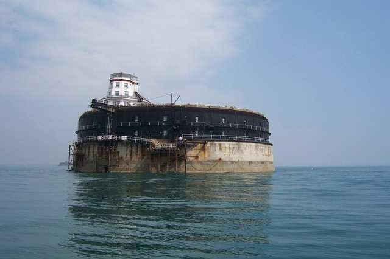

No Man's Land Fort
No Man's Land Fort, also referred to as No Man's Fort, is a sea fort in the Solent, near Portsmouth, England. It is one of the Palmerston Forts built between 1867 and 1880 after the recommendations of the 1859 Royal Commission. It is 200 feet in diameter, and lies 1.4 miles (2.3 km; 1.2 nmi) off the coast of the Isle of Wight.

Picture by Colin Babb, CC BY-SA 2.0, Link
History
The fort was designed by Captain E. H. Stewart, overseen by Assistant Inspector General of Fortifications, Colonel W. F. D. Jervois. Construction work began in 1865, and the fort was completed in 1880, long after the threat of a seaborne invasion from France had passed, at a cost of £462,500.
No Man's Land Fort is almost identical to Horse Sand Fort. It has been used as a luxury home/hospitality centre for high-paying guests with an indoor swimming pool and two helipads. In July 2004, Legionella bacteria found in the hotel's water system forced its closure. The Fort was put up for sale in 2005 and again in 2007, but the company collapsed. In March 2008, Harmesh Pooni, claiming to still be the owner, barricaded himself inside the fort in protest against the administrators KPMG.
The property was eventually sold by KPMG for £910,000 in March 2009. In March 2012, it was purchased by Clarenco (who also own Spitbank Fort and Horse Sand Fort) with the intention of refurbishing it as a hotel. The fort opened as a hotel in April 2015.
The 1972 Doctor Who serial The Sea Devils used the fort as a filming location for several scenes.
Other sea forts include Spitbank Fort, St Helens Fort and Horse Sand Fort.